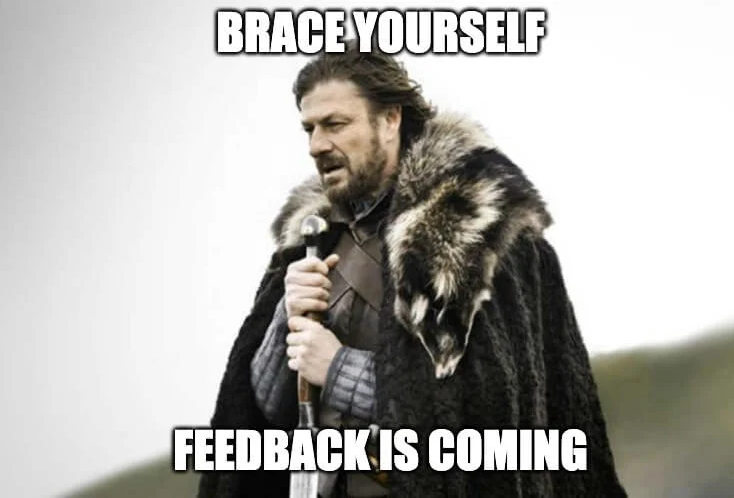
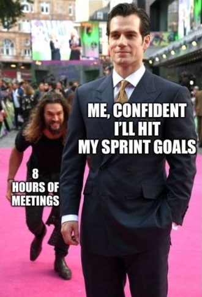

Week 7: Giving & receiving feedback, and having effective meetings#
Studio Abstract#
Devices closed for this entire set of exercises
In this studio, we will look at how we can provide feedback to our peers to improve team performance and minimise conflict.
We will address the following activities and exercises:
Why feedback is important
The feedback model
Tips for giving feedback
Feedback exercise
Creating effective meetings
Universal meeting structure (Agenda)
Universal meeting rules
Giving (and receiving) feedback#
⏱️ 15 minutes - Group discussion
Devices closed for this exercise
Question
Do you wish that you were getting more feedback about how you were doing in COMP1100, such as what you are doing well and where you could improve?
Feedback is critical to modern software teams because of the growing complexity of technology. It is difficult, if not impossible, to create commercially viable software as an individual without user validation, customer input or team refinement. Any non-trivial software systems requires teams to build and maintain.
Therefore, Learning how to give and receive feedback to each other in a respectable and effective way is hugely important in preventing and resolving conflict.

The feedback model we are using is from Manager Tools. You can learn more about this system at the following link:
Feedback is about encouraging future behaviour#
The major principles of the Feedback Model are:
Feedback is about encouraging future behaviour, not about doing a post-mortem on the past.
Feedback is not about getting angry or punishing people.
Feedback is positive and negative: at least 80% of feedback we give to a person should be positive. Organisations seem to work effectively, which means most of us are going good things most of the time. Find those things and let people know! They probably don’t know.
Most people are desperate to gain feedback about how they are doing.
Feedback should be given regularly and quickly.
Item 1 above is important: we should only give feedback with the aim of ensuring effective future behaviour. Prior behaviour cannot be changed, so we shouldn’t dwell on it.
The Model#
The feedback model consists of two simple steps:
Describe behaviour.
Describe impact.
Note
The model is the same for both positive and negative feedback. It is just what and at which time you mention each point that differs.
Step 1: Describe Behaviour#
Feedback is about changing future behaviour. It is important that any feedback relates to behaviour, not to attitude.
Why? First, we can’t see attitude, we can just infer it. So, we’re much more likely to get it wrong when we point to attitude. If we get this part wrong, the feedback will be ignored.
Second, even if we do infer it correctly, people know that we can’t see it, so they can just deny it.
Third, it is ok to sometimes have the ‘wrong’ attitude, provided our behaviour is still professional.
For example:
Manager: “When you got annoyed at the client, it made us look unprofessional.”
Engineer: “I didn’t get annoyed.”
Manager: “Yes, you did. You got really annoyed with the client. I could tell!”
Engineer: “I wasn’t annoyed – I don’t know what you are talking about”.
This can go on and on for a while!
Instead, consider:
Manager: “When you roll your eyes when meeting with a client, it made us look unprofessional.”
This makes it much harder to deny. The engineer can say: “I didn’t roll my eyes”, but it is easy for the manager to respond: “I saw you roll your eyes.”
Further, it is ok for the engineer to be annoyed at a client, as long as they behaviour professionally and effectively.
Tip
Start this part with “When you”. This encourages us to focus on behaviour.
Some examples of describing positive behaviour:
“When you deliver everything on time…”
“When you cover for someone when they are sick…”
“When you reach out to let us know you will be late…”
“When you make that extra effort to gather more data…”
“When you remind us to take a break…”
Some examples of describing negative behaviour:
“When you arrive late for meetings…”
“When you say you will do something by a deadline but don’t deliver…”
“When you sigh at people in meetings…”
Step 2: Describe the Impact#
Then, we describe the impact that the behaviour had on ourselves or others.
By describing the impact, it helps people to understand the impact (positive and negative) of their behaviour, which they may not have noticed before – or they may not have realised other people notice. Further, if we want them to change their behaviour, we want it to be a new behaviour that does NOT have the same impact. If we want to keep doing something good, we want them to focus on achieving that outcome as well.
The impact doesn’t have to be important or particularly large. Giving little bits of feedback ensure that we give feedback regularly, but also that feedback can be short and quick. Look for small impacts that people do well every single day, and tell them about it. Those small things will add up over time.
Mark Horsham from Manager Tools uses the analogy of driving a car. As we drive, we are constantly getting feedback by observing the road, feeling the steering wheel, and listening. As we start to veer off the road a little bit, we use the feedback that we receive from our eyes to adjust. We do this over and over again. We don’t wait until we are nearly in a ditch on the side of the road. Feedback to people we work with can be similar. Thanks for doing the little things right lets people know: please keep doing this. Short negative feedback lets poeple know: please don’t do this, but don’t worry that you did it in the past.
Tip
Begin this step with “Here’s what happens”. This helps to focus on impact. Once you get used to delivering regular feedback, you can usually drop this part.
Some examples of describing positive impact:
“Here’s what happens: It allows us to keep the project on track.”
“Here’s what happens: It means that we can continue to deliver quality service.”
“It allows the rest of the team to re-plan.”
“I really appreciate it, and so does the rest of the team.”
“It gives the team a chance to refresh and refocus.”
Some examples of describing negative impact:
“We miss your input and it sometimes disrupts the meeting.”
“It puts the other project deliverables in danger, and annoys the rest of the team.”
“It makes us look unprofessional.”
Note
Unlike in step 1 (describing the behaviour), in describing the impact, we CAN refer to attitude, emotion, etc., especially when it is our own. We can say: “When you do X, it really annoys me and the rest of team”; or “When you do X, it really makes me proud to be part of this team”. People can’t deny other people’s attitudes, and for some impacts, they truly are emotional.
Pulling It Together#
If we pull these steps together, we get the following template:
When you [behaviour], here’s what happens: [impact]”
Let’s pull together our examples from above.
Positive feedback:
“When you deliver everything on time, here’s what happens: It allows us to keep the project on track. Thanks.”
“When you cover for someone when they are sick, here’s what happens: it means that we can continue to deliver quality service. Thanks.”
“When you reach out to let us know you will deliver late, it allows the rest of the team to re-plan. Thank you.”
“When you make that extra effort to gather more data, I really appreciate it, and so does the rest of the team.”
“When you remind us to take a break, it gives the team a chance to refresh and refocus.”
Negative feedback:
“When you arrive late for meetings, we miss your input and it disrupts the meeting.”
“When you say you will do something by a deadline but don’t deliver, it delays other parts of the project, and annoys the rest of the team.”
“When you sigh at people in client meetings, it makes us look unprofessional.”
Read each of these to yourself. How long do they take? Each could be one under ten seconds, maybe even under five seconds! This encourages regular feedback because it can be given on your way out of a discussion, immediately after a presentation, or in a small break during a class.
Tip
Tips for Giving Feedback
If you can’t do it with a smile, don’t do it. We should be able to deliver feedback in a light-hearted manner; especially negative feedback! If we are fuming but the feedback really needs to be delivered, we should leave it until we have calmed down.
Focus on future behaviour. What has happened is in the past, and cannot be changed.
For positive behaviour, finish with “Thanks”.
Keep it short: feedback should be able to be delivered within 15 seconds, once we have enough experience.
Deliver both positive and negative feedback in ‘private’. It can be a public space, but ensure others cannot hear.
Try to deliver this in person, either face-to-face or on a phone/video call. Written feedback is okay if in person is not possible, but is not as effective.
Tip
Tips for Receiving Feedback
It’s not necessary to defend ourselves: When we give feedback to people, we assume that their intentions are good, and that, in this case, they had a small error or misunderstanding. It is NOT important to dig down into the cause of why. The person receiving it understands why, and they are mature enough to figure out how to change their behaviour.
As such, it is important to realise that when we receive a short piece of negative feedback, it is not necessary to defend ourselves (unless of course, it is an accusation of e.g. misconduct).
If we assume that the person giving us feedback assumes our intentions are good, then we can just say: “Thanks for the feedback”. There is simply no need to get into a dialogue about this.
If you are giving someone feedback and they want to defend their actions, you can assure them that they don’t need to.
Consider this example of shutting down a discussion about reasons:
Programmer: “When you are late to meetings, we really miss your input and it can sometimes be disruptive.”
Designer: “Yes, but you see, there was a lot of traffic today, and then I got stopped by a colleague on the way from the bus.”
Programmer: “Sure. I always assume that you don’t intend to be late.”
Speed Feedback Exercise#
Devices closed for this exercise
⏱️ 30 minutes - Pairs
In this activity, you will practice giving fast and effective feedback on some simulated examples.
Break into pairs – pairs should be from teams. If you have an odd number, this works ok in groups of three as well.
Below are 10 examples: 6 positive and 4 negative. Take turns coming up with quick feedback for these; that is, the first person does scenario 1, then the 2nd person does scenario 2.
You should be able to complete this task in just a few minutes! But we’ll give you a bit more time.
Scenario 1: Your project was stalled because there was some unknown technical issue. Your partner spent the morning fixing it, without being asked.
Scenario 2: You need some information from your partner, who is in another team. You reach out to them, and within an hour, they responded with the information you need.
Scenario 3: Your partner was able to get a technical issue resolved quickly because they knew the technical support staff well and contacted them directly for help.
Scenario 4: Your partner always takes good notes in team meetings and sends them around afterwards.
Scenario 5: Your partner keeps the project plan on Trello up to date by moving and closing tasks when they have completed them.
Scenario 6: Your partner uses branches and always checks in working code with tests that pass.
Scenario 7: Your partner has been 10-15 minutes late for the last three team meetings.
Scenario 8: Your partner committed to sending draft presentation slides the day before the presentation, but delivered them 20 minutes before the presentation.
Scenario 9: Your partner often dominates meetings by talking a lot and not taking the time to listen to others.
Scenario 10: Your partner is a high performer, but does all planning and delegates tasks to others without consultation.
Positive Feedback Exercise#
⏱️ 10 minutes - Pairs
Devices closed for this exercise
Swap pairs so people are working with others in their team now. Each person in the pair, come up with one positive thing that the person in front of you has done in the past week, and provide positive feedback to them about it.
If you need to, take a few minutes to think how to say it quickly and to focus on behaviour AND the future.
Creating Effective Meetings#
⏱️ 20 minutes - Individual
The thought of meetings can send some people into existential dread, either through bad prior experiences or having to deal talking with people for an hour (or longer). Unfortunately, meetings have developed a bad reputation because they are often misused by management, administrators and leaders.

Universal Meeting Structure and Rules#
There is a generalised meeting structure that can be applied to any meeting to improve flow and ensure the meeting achieves all its objectives. Additionally, there are a set of specific general ground rules for meetings to guarantee meeting members and facilitator stay focused and on task.
Discussion: Universal Meeting Structure (Agenda)#
⏱️ 5 minutes - Class
Devices closed for this discussion
Purpose: What does you want to achieve in the meeting? Explicitly stating this will provide context before the meeting begins.
Participants: Who is expected to be there? Assign a chair (who will run the meeting) and a note-taker.
Discussion Points: What are the topics, issues or problems? Identify who will lead each discussion point.
Tip
Research shows that if you write the discussion point item on your agenda as what outcome you want from the meeting, it focuses the attendees. So instead of: “Prototype” or even “Discuss prototype features”, write the point as: “Identify which features we will prototype”.
Times: Assign a start time each item, and stick to it! If it is clear this needs more time, ‘park’ it until the end of the meeting, and defer to another meeting if you don’t have time at the end.
Action Items: Those things that need to be done after the meeting. These are things that should go on your team please, such as on Trello. So, an action item should say: who does what by when?
Supporting Documentation & Materials: Anything else you need; e.g. if you want to discuss how you are going to assign software features to be implemented by team members, have the list of features.her multimedia.
Every meeting type will be different, but in general these are the most critical requirements of a meeting. This structure is a suggestion and should be moulded to requirements.
Universal Meeting Rules#
⏱️ 5 minutes - Pairs
Devices closed for this discussion
Have a meeting chair: Someone should run the meeting.
Pre-publish an agenda: This ensures the smooth flow of the meeting and keeps it focused on required aims and goals. It should have at least:
Meeting start time.
A list of items to be discussed.
Start times for each specific item.
Meeting end time.
Start on time: If you start late, people will know they can show up late next time. To help with this:
Be early: It takes time to settle. If the meeting starts at 1100h, show up 2-3 minutes early so you can settle and prepare yourself.
Use a time-keeper: Someone needs to identify that time is nearly up for an agenda item.
Follow the agenda: Anything off-topic should be parked for later.
Use a “parking lot”: A “parking lot” is time at the end (if any) to discuss things that wew parked.
Assign actions: Whenever the attendees agree that something should be done, write down who does what by when and send this around.
Publish notes: Notes are not minutes. Minutes are usually a legal requirement and are done by professional stenographers. In short, notes are simply:
What was decided?
Who will do what and by when?
Continuously Improve: Periodically revisit how your meetings work and whether they are working well. Be adaptable and evolve.
Meeting Agenda Draft#
⏱️ 15 minutes - Team
Devices closed for this exercise
Now that you have an understanding of meeting types, a general meeting structure and general meeting rules, it is good practice to develop a draft meeting agenda for your first team meeting.
Your task:
Write an agenda for your next team meeting. Follow the structure from the section on the universal meeting structure.
Show your legend your agenda, and they will give feedback on what works and what doesn’t.
Refine your agenda based on the feedback.
Outside of the class, hold the meeting!
It takes just 5-10 minutes to create an agenda, but it can make meetings that much mroe effective and far less mind-numbingly boring!
Bonus: It’s dangerous to go alone! Take this.#
⏱️ ∞
Feedback model for managers - Manager tools#
If you are interested in learning more, especially if you are someone who would like to be an effective manager one day, there are a few Manager Tools podcasts that are helpful (also available on most podcast apps):
🌐 Manager tools feedback model – Part 1
🌐 Manager tools feedback model – Part 2
Saving the world from bad meetings - David Grady#
🌐 https://www.youtube.com/watch?v=F6Qo8IDsVNg
Bad meetings make people miserable. Here are some ideas to stop it.
Core Values - Bob Keiller#
🌐 https://www.youtube.com/watch?v=ulWkN0k0MVE
Benefits of clear guiding purposes and running businesses on sound principles.
Three ways to create a work culture that brings out the best in employees - Chris White#
🌐 https://www.youtube.com/watch?v=2y8SA6cLUys
Chris highlights three points to improve work culture.